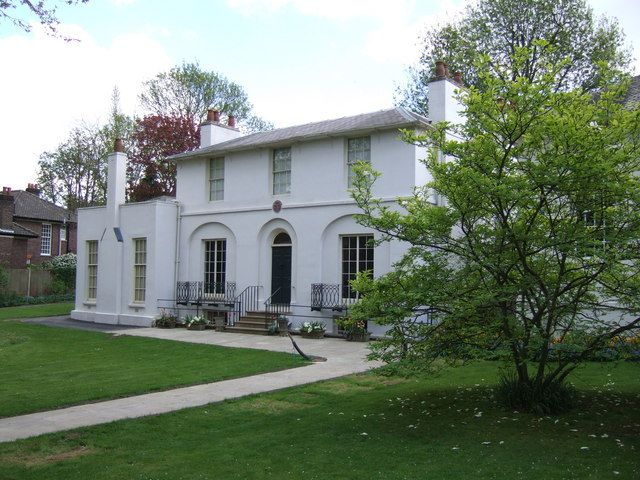

Track 23 · House & museum · 2:16
The whole walk as one file · the route as GPX / KML / CSV · the podcast feed

{kind=link}
Stop twenty-two. Keats House.
It was built as a pair of semi-detached houses called Wentworth Place, and it is why you are on this street rather than any other. John Keats moved into one half in December eighteen eighteen, at twenty-three, having just nursed his brother Tom through the tuberculosis that killed him and that was going to kill Keats. The Brawne family moved into the other half. Fanny Brawne was eighteen. They became engaged over the garden wall, more or less literally.
What happened next is the most productive year in English poetry. In the spring of eighteen nineteen, in this house and this garden, he wrote Ode to a Nightingale, Ode on a Grecian Urn, Ode on Melancholy and Ode to Psyche, which is most of the work he is remembered for, in about three months. His friend Charles Brown said the nightingale had built a nest in the garden that spring, that Keats took a chair out under the plum tree one morning, and that he came back in with scraps of paper he then pushed behind some books. That is Ode to a Nightingale.
He left in September eighteen twenty for the Italian climate, on the advice of doctors who had nothing else to offer. He died in Rome five months later, aged twenty-five, convinced he had failed.
The house was nearly demolished in the nineteen twenties and was saved by public subscription, a great deal of it raised in America. The plum tree is a replacement. Everything else is astonishingly quiet.
Ticketed, and inexpensive. Generally Wednesday to Friday and Sunday, so check before you come.
Out of the gate, west along Keats Grove to Downshire Hill, then right into Willow Road. You will pass number two, which is a museum and is on a longer list than this one. Cross East Heath Road, climb, and bear left into Cannon Place. Cannon Lane drops away on your left. Eight minutes, and stop twenty-three is a door in a wall.
51.55552, -0.16794 · where this is on a map